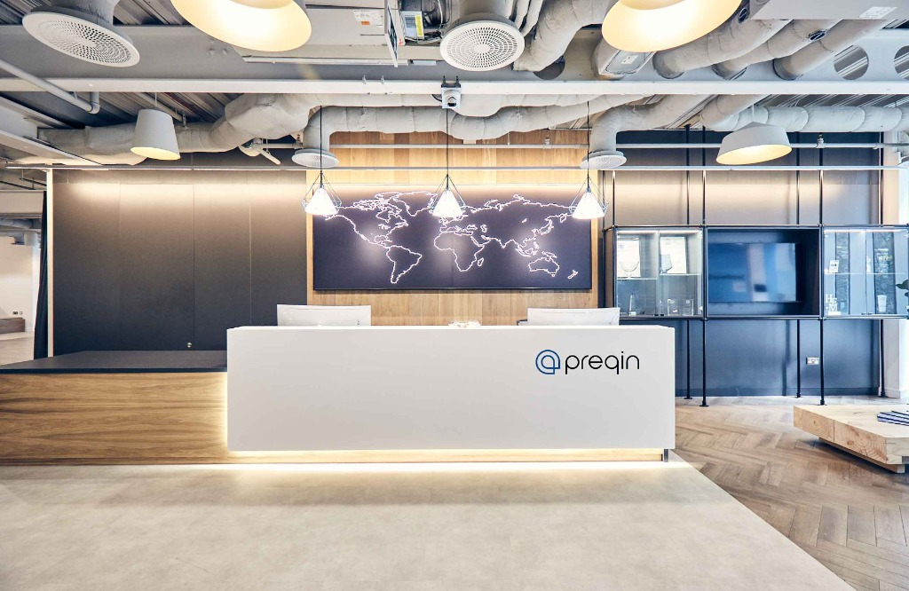
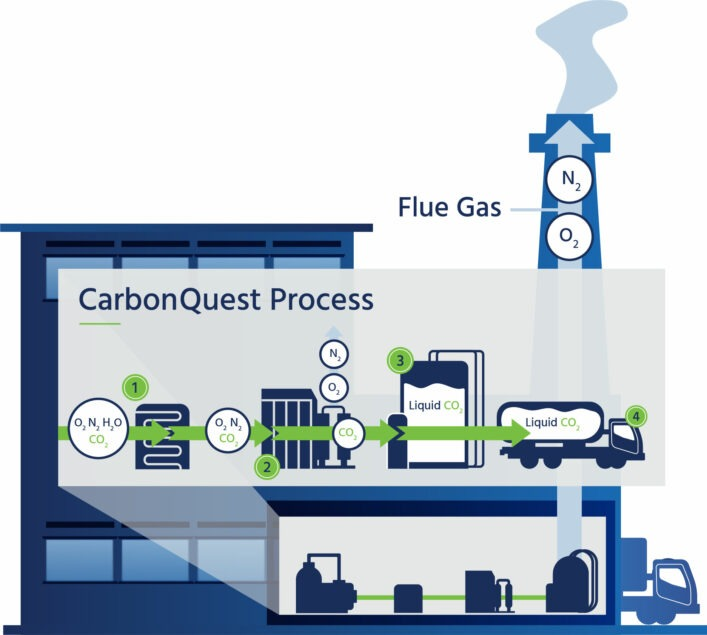
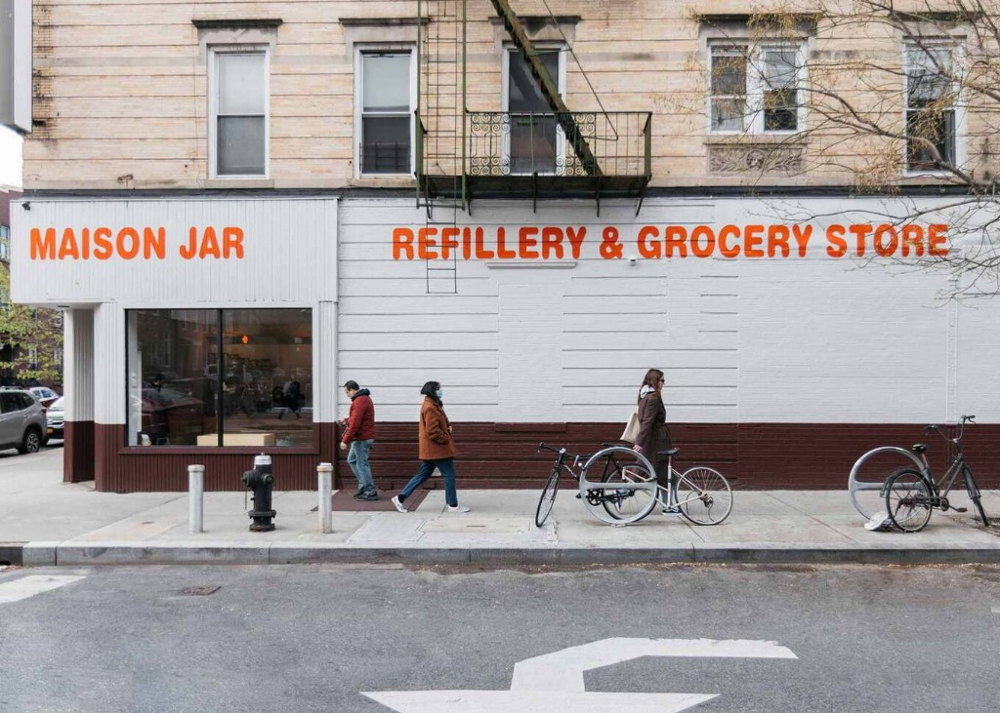

Short consulting projects with real companies
MSc Sustainability Management, Columbia University · 2023–24
As part of my master's degree, I worked in small teams on real problems for companies in New York, London and Switzerland, and researched climate finance in Africa. Each was short, but each was a real client brief.
Preqin · a Scope 1–3 carbon strategy
Preqin, a private equity firm · London · Columbia coursework

We built a greenhouse gas inventory strategy for the firm. Scope 1 and 2 were straightforward: we asked for their data and calculated them. Scope 3 was the hard part, because most of it sits in purchased goods and services. So we wrote a guidance document for Scope 3.
- How to start and grow a Scope 3 inventory.
- A stakeholder analysis: which suppliers to prioritise, based on their share of emissions.
- Practical ways to reach out to suppliers and get the data they need.
Baumann · building a culture of sustainability
Baumann, a family-owned spare parts manufacturer · Switzerland · University of St. Gallen exchange (Thrive program), during my Columbia degree
On exchange at the University of St. Gallen, we worked on real case studies with companies. For Baumann, the challenge was turning sustainability from a side topic into how a family business runs.
- Looked at supply chain challenges and how to reduce the company's exposure to climate risk.
- Proposed ways to build a culture of sustainability from the top down and the bottom up.
- Linked sustainability to finance, showing how acting now helps avoid climate costs later.
CarbonQuest · a life cycle assessment of building carbon capture
CarbonQuest · New York · Columbia coursework

CarbonQuest captures carbon dioxide from a building's exhaust and turns it into liquid CO₂, instead of releasing it into the air. We assessed one of its units on a large residential building in New York.
- Mapped the whole capture process and its technical steps.
- Ran a life cycle assessment of the full capture unit, to show its net carbon benefit.
- Prepared the results to support the company's case for the US federal 45Q tax credit for carbon capture.
Maison Jar · a first greenhouse gas inventory
Maison Jar, a retail store · Brooklyn, New York · Columbia coursework

We built the store's first greenhouse gas inventory, so it knows where its emissions come from.
- Gathered and checked electricity bills and fuel use, including diesel.
- Calculated the store's emissions and showed where they come from.
Anytime Spritz · a GRI sustainability report
Anytime Spritz · New York · Columbia coursework
We prepared a sustainability report for the company following the GRI standards, the most widely used global framework for sustainability reporting.
Power for All · climate finance for farming and clean energy in Sub-Saharan Africa
Power for All · Sub-Saharan Africa · Columbia group research project
Power for All asked our team to report on climate finance trends and barriers for decentralised renewable energy (DRE) and agri-food in Sub-Saharan Africa. The IPCC's 2023 report shows that climate finance falls far short of what is needed, most of all in developing regions. Clean power and better farming could raise rural electricity access, crop yields and incomes, but the money is not reaching them.
- Found why investors stay away: high upfront and transaction costs, high risk, few financial models built for small farms and DRE firms, and restrictive rules.
- Showed that even when money is available, weak banking and lending systems make it hard for farmers and small firms to reach it.
- Recommended stronger rules, new intermediaries, project-specific finance models, and blended finance to bring in private and institutional investors.
- Called for capacity building, technical help and public-private partnerships, so solutions like solar irrigation, clean cold storage and batteries can grow to serve a population expected to double in 25 years.
Also from Columbia: climate risk and human capital research for CalPERS.